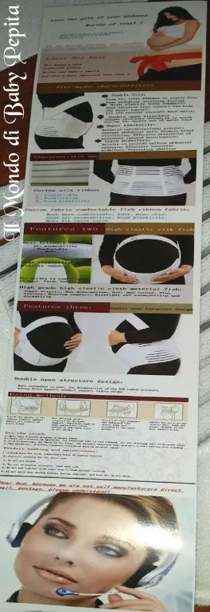
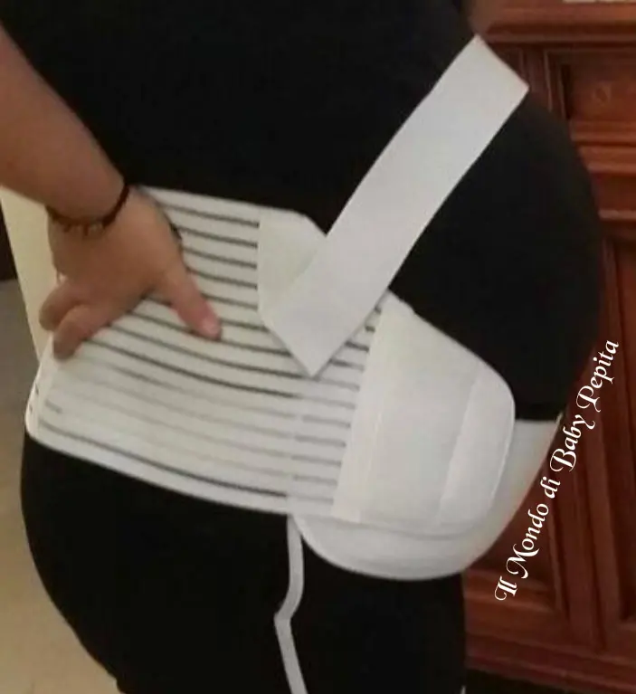
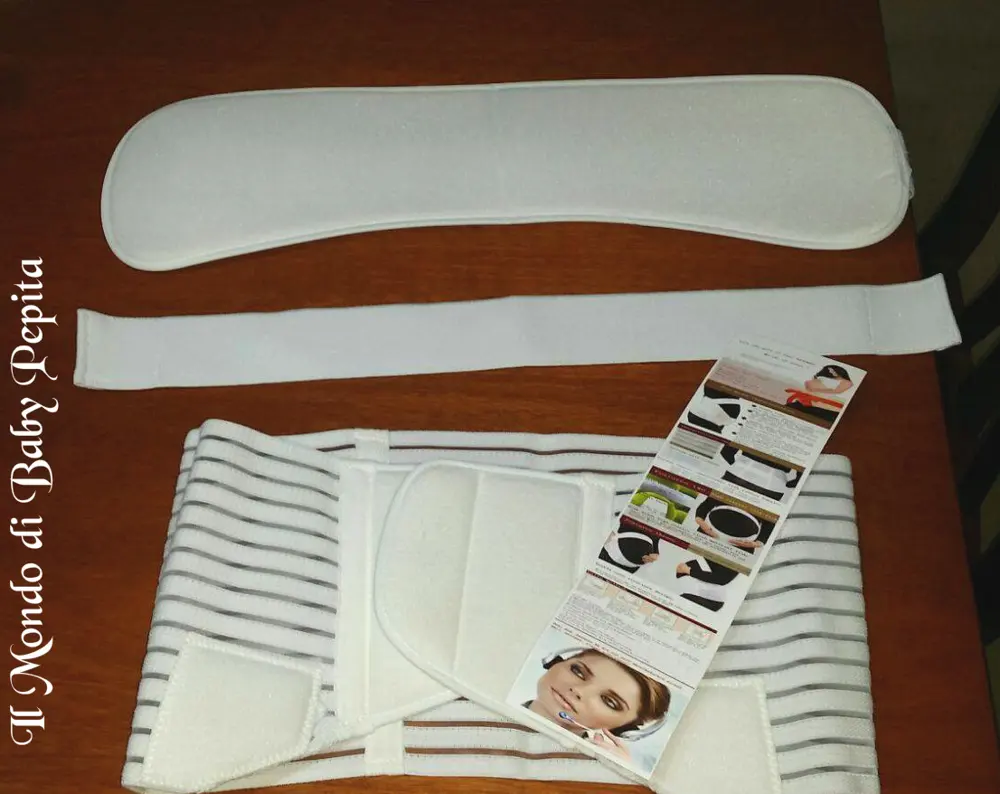
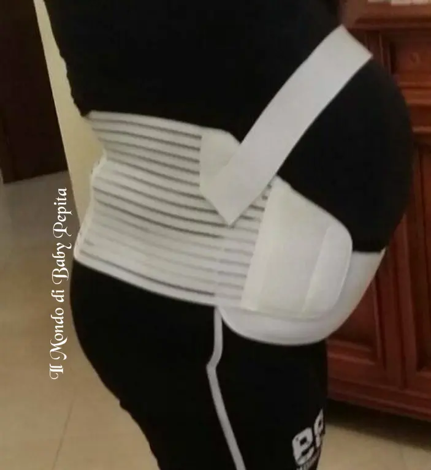

Jardin d'Eden - Fascia di sostegno maternità
 Care mamme oggi recensiamo un articolo tutto per voi. .Parto direttamente col parlare del prodotto poiché mi rendo conto che sono stata assente questi giorni e leggere altre cose sarebbe anche scocciante. VOGLIAMO DIRETTAMENTE CAPIRE DI COSA SI TRATTA :DEd io vi accontento!Già dal titolo si può intuire che è una fascia per le donne in gravidanza. . quindi per mamme e neo mamme. .Il venditore Jardin d'Eden mi ha dato la possibilità di provare e toccare con mano l'utilità di questa fascia premaman.
Care mamme oggi recensiamo un articolo tutto per voi. .Parto direttamente col parlare del prodotto poiché mi rendo conto che sono stata assente questi giorni e leggere altre cose sarebbe anche scocciante. VOGLIAMO DIRETTAMENTE CAPIRE DI COSA SI TRATTA :DEd io vi accontento!Già dal titolo si può intuire che è una fascia per le donne in gravidanza. . quindi per mamme e neo mamme. .Il venditore Jardin d'Eden mi ha dato la possibilità di provare e toccare con mano l'utilità di questa fascia premaman.

 A COSA SERVE?E' un supporto per la schiena per il peso del pancione garantendo un sollievo ai dolori lombari. Esistono di varie taglie; partono infatti dalla M, la L, poi c'è la XL ed anche l' XXL. .Io credo che il peso del pancione si senta indubbiamente gli ultimi mesi di gravidanza e quindi il mio consiglio spassionato, è quello di prendere la taglia tra la XL e la XXL. .Da come possiamo notare in foto, la fascia avvolge tutta la zona lombare e si unisce sotto la pancia e sopra lo stomaco, così da frenare bene la pancia e fare movimenti in tutta libertà sentendo meno dolori.
A COSA SERVE?E' un supporto per la schiena per il peso del pancione garantendo un sollievo ai dolori lombari. Esistono di varie taglie; partono infatti dalla M, la L, poi c'è la XL ed anche l' XXL. .Io credo che il peso del pancione si senta indubbiamente gli ultimi mesi di gravidanza e quindi il mio consiglio spassionato, è quello di prendere la taglia tra la XL e la XXL. .Da come possiamo notare in foto, la fascia avvolge tutta la zona lombare e si unisce sotto la pancia e sopra lo stomaco, così da frenare bene la pancia e fare movimenti in tutta libertà sentendo meno dolori.
MATERIALE:E' in cotone e nylonLa fascia dietro la schiena è invece in veltro, quindi adattabile e comoda da indossare.

L'unica cosa che posso dire è che comunque volente o nolente, per indossarla c'è bisogno di una mano esterna perchè avendo il pancione sarà un pò scomodo fasciare da dietro. .Ma una volta indossata, chi l'ha usata, mi ha garantito che è davvero un buon sostegno. .
Il mio consiglio infine, è quello di prendere una taglia in più così da poterla indossare per tutto l'arco della gravidanza.Prezzo: 14,99 €Per acquistarla:https://www.amazon.it/gp/product/B01DF3MJGQ/ref=oh_aui_detailpage_o04_s00?ie=UTF8&psc=1 Per quanto riguarda me:FACEBOOKINSTAGRAMTWITTER
Per quanto riguarda me:FACEBOOKINSTAGRAMTWITTER